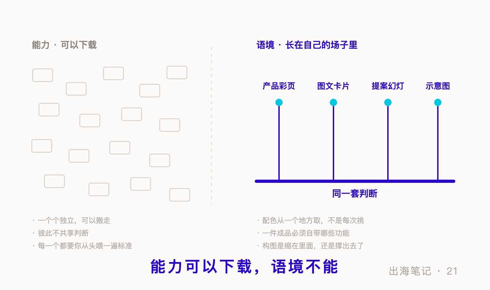

序言：没有那句指令
我们对外材料里的示意图，现在基本都是我的 Agent 做的。不是生成出来的——生成的图太随机，同一句话喂两遍出来两个样子；是让它用代码一根线一根线搭出来的。
看到这样一张图，多数人第一个念头是那两件事：那句指令是怎么写的？是不是得先给它一张参考图？
这两个问题我答不上来。不是不方便说，是那句指令不存在。最诚实的回答只有一句：我没什么指令，让它做一张示意图，它就做了。
顺着这个答案往下想，通常会落到一个挺合理的结论——那大概是训练了很久。
而我自己随口说的另一句，才是真的答案——这些图都是改过很多次的，所以后来的就相对简单很多。
20 期《写得进去，不等于教得会》讲的是怎么让它记住。文末我留了一个更根本的问题没碰：你往里装的，到底是能力，还是语境？
上面那两个问题，就是这个问题最日常的样子。它们背后是同一个预设：产出的质量，由你交出去的那一句话决定。
一次性的活儿，这个预设大致成立。持续产出，它错得相当彻底。
一、不是我训练了它，是它长在我的档案里
"训练了很久"听上去像是有人反复调教了一个模型。实际发生的事更朴素：它在我这几年的工作档案里待过。
这两个说法差别很大，而且能当场分出胜负：如果起作用的东西在模型里，那换一个模型就该退回原点。
我换过。同样的活儿交给另一个模型，出来的东西没有明显退步。
训练发生在模型那一侧，而我换掉的正是那一侧，留下的是档案。没退步，说明起作用的东西不在被换掉的那一半里。
它顺带解释了一件我早期想不通的事：更早的时候我用另一个模型做同一类东西，改十几次也改不到位。当时我以为是那个模型不行。现在回头看，不行的不是模型，是我还没有那套判据——它只能猜我要什么，而我自己也说不清。
所以"改过很多次"不是苦劳。每改一次，就有一条"这样不行、那样才对"被定下来。改到第十次，前九次的判断已经不在我脑子里了，它们在档案里，下次自动到场。
真正迁移过去的从来不是"画图"这个能力——那是出厂就有的。是在我这里，一张图算做对了是什么样。
二、我装过的 skill，有一半没打开过
这里得先交代我自己的一个偏差：现成的 skill 我几乎没装过。
这一点和多数玩这个的人不太一样，我也是后来才意识到的。装过的屈指可数，是一套通用的文档处理件。装的那天心情挺好，有一种工具箱又满一格的踏实感。
今年七月我翻了一次使用记录，想看看这几个东西到底谁在干活。其中两个的调用次数是零。 不是很少，是零——装上之后一次都没打开过。我把它们关掉了。
它们不好吗？不是。它们能力齐全，做得也专业。是我的活儿里没有那个形状的洞。
而更不体面的一层是：那两个东西其实已经交付过一次了——在我点下"装上"的那一刻。
那一刻被解决掉的不是任何一件具体的活儿，是"我是不是落后了"这种感觉。我总共才装过那么几个，所以这笔账很小；但换成一个装了一百个的人，算法是一样的：焦虑一旦交付完，使用率就不再是它的考核项。
留下来天天在用的那几个，都是我自己写的，而且今天的样子跟第一版差得很远。第一版全是步骤：先做什么、再做什么、输出放哪里，写的时候还觉得挺完整。
后来长出来的东西，几乎没有一条是步骤，全是坑：
- 交出去的文本文件，编码不对，对方打开是一屏乱码——而我们自己这边打开，永远是好的。
- 导出成品图，不能直接截屏幕上那一版：屏幕窄的时候版面会自动缩，截出来的是缩过的那一版，不是设计尺寸那一版。看着一模一样，尺寸不对。
- 一个标题的标签里多包了一层，浏览器会提前把它闭合掉——页面上看完全正常，字号、加粗、位置全对；可在机器眼里，那个标题从来没存在过。
这些没有一条能从通用资料里查到，全部来自某一次真的出过事。而且你会发现它们的形状在往一个方向走：第一个是对方才看得见，第二个是自检工具骗了你，第三个是肉眼根本验不出来。
步骤谁都能写，因为步骤描述的是顺利的那条路。坑只有干过的人有。
三、四条产出线，底下是同一套判断
我做的东西不止一类：给客户的产品彩页、给内容平台的图文卡片、提案幻灯片、各种示意图。载体、尺寸、看的人全不一样。
按"装 skill"的思路，这该是四套互不相干的能力，得分别去装。
但底下用的是同一套判断：
- 配色不是每次挑，是从一个地方取。 规范在哪、以谁为准、什么时候允许偏离。
- 一件成品必须自带哪些功能。 不管什么载体，都要能全屏演示、能一键导出成图。这听着像某个工具的特性，其实是我的判据——在我这里，"做完了"必须包含这两样。
- 构图上要判断的永远是同一件事：它是缩在里面，还是撑出去了。 空得发虚要返工，撑破裁掉也要返工。这一条不认载体。
- 验收看真实成品，不看源码。 一份东西做没做对，我只认最后渲染出来的那张图，四个角都要看。这条听着有点笨，但它拦下来的错比任何一条"应该怎么做"都多。
- 版式一旦定稿就锁死，改动只对规范、不对上一版。 因为漂移都是一小步一小步走远的，而每一步都很"忠实"。
这类判断有个共同点：它们几乎不含专业知识。 我有一个做前期核查用的 skill，第一步不是"开始查"，是先判断这次值不值得查——里面明写着，多数时候答案是不值得。这一条里没有一丁点核查方法上的东西，可它是整个件里最值钱的一行。因为最贵的浪费从来不是它做得不够好，是它在不该出场的时候出场，把一件十分钟的事做成了一个流程。
所以那十几个常用件，不是十几套能力，是同一套判断在不同载体上的几个出口。
这一下讲通了两件我原本觉得奇怪的事。
一是新载体上手为什么那么快。换一个从没做过的形式，看着是从零开始，实际上难的部分早就完成了——只是给已经成型的那套判断接一个新出口。
二是为什么现成装来的那些帮不上忙。一百个现成件是一百座孤岛，彼此不共享任何判断，每一个都得你从头喂一遍自己的标准。
还有一点我一开始没注意到：上面那些判断，每一条都自带一个可执行的检查动作。"从规范取"是一个可查的动作，"缩还是撑"是一个当场能看的判断。
一条规则如果写成"要注意版式一致性"，它还是知识——它需要一个有判断力的人把它展开，而你写它的对象恰恰没有那个判断力。写成"输出后打开成品，逐项对照规范，不对照上一版"，它才装得进去。
前几天我给一个外部执行方发整改工单，十几条，每条后面挂了一句"怎么验"。多花了点时间，换来的是我不必依赖他告诉我做完了。
所以一份 skill 有没有真的炼进去，我现在看一件事：它给不给你一个能反驳它的工具。
四、"关键还是靠人"这句话，我自己也说过
写到这里，有一个反应几乎是必然的：skill 看着高端，其实珍贵的还是人脑子里的判断力。
这句话对一半，但它舒服得有点危险——舒服到说完就可以什么都不做。
对的那一半上面已经说过了：能下载的那部分有名字、有形状、能展示，而真正起作用的判断没有形状。
另一半：判断如果只长在脑子里，它和一个老师傅的手艺没有区别。18 期讲过那个位置的毛病——写入权不在你手里，随人走、会折旧、每次都得重新想一遍。而"改过很多次"做的是相反的动作：把判断从脑子里搬出来，放到下次会自动到场的地方。
但我得老实说一句：这件事大多数人做不成，而原因不是不够聪明。
判断长不出来，通常只有两种情况。
一种是你的活儿没有第二次。每一单都是新客户、新品类、新要求，这一次的判断确实用不到下一次。这不是懒，是结构——有些人的价值本来就在临场，不在沉淀。
另一种更常见：有第二次，但第一次没留下来。 同一类活儿一年做几十遍，每一遍都重新判断一次，判断得可能还挺好，只是每一遍都从零开始。
所以真正的门槛不在"你有没有判断力"，在两个更朴素的问题上：你的活儿有没有第二次？第二次来的时候，第一次还在不在？
第一个问题决定这件事值不值得做。第二个问题，多数人从来没被问过。
最后还得认一件丧气的事：同样的东西在不同人手里，效果确实不一样，而那个差别多半还是在脑子上。
沉淀不会替你换一个脑子。判断本身是错的，沉淀下来的就是一堆错的判断，而且从此自动到场，越错越稳。
但脑子和沉淀管的不是同一件事：脑子决定你的上限，沉淀决定你多经常摸得到它。 两个判断力差不多的人，一个每次从头想，一个把想过的留下来，一年之后差的不是聪明，是到场率。
上限那部分我改不了。到场率那部分，是可以修的。
尾声：四条落地
- 先看使用记录，再看能力清单。 装了三个月一次没调用过的，关掉不心疼——那不说明它不好，只说明你的活儿里没有那个形状的洞。
- 每次纠正之后，别只写"应该怎么做"，补一句"怎么知道做对了"。 前者是知识，后者才装得进去。
- 同一条判断别按载体分四份写。 配色从哪取、什么算做完、构图算不算撑破，在所有产出线上多半是同一条；分四份写，就变成四份会各自漂移的副本。
- 改完之后多做一步，把这次为什么改写下来。 成本是几分钟，省下的是下一次从头判断一遍。
今天下班前可以做的一件小事：翻出一份你写给 AI、或者写给新人的流程，数一数里面有几句是"怎么做"，有几句是"怎么知道做对了"。
我数过我自己的第一版，比例大概是九比一。
下期预告：这一期讲的是把判断写进协作者。下一期换一个方向——把它写进一个更不听话的对象：搜索引擎。有一层完全免费的优化，多数外贸公司的网站从来没做过，而它就摊在源代码里，谁都能打开看。
出海笔记，记录一家中国海洋仪器公司出海路上的实操与反思。